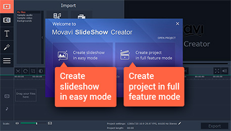

-
1.Install the Program on Your Computer
Download Movavi’s slideshow creator and run the installation file. The onscreen instructions will guide you through the setup process.
-
2.Select the Working Mode
When you launch Movavi’s slideshow maker with the music-adding capability, you’ll see a Welcome window. In this window, you can choose one of two working modes: Easy mode or Full feature mode. If you want to quickly make a slideshow with photos, music and transitions, choose Create slideshow in easy mode. If you want to incorporate video footage, titles, special effects, and other enhancements to your movie, choose Create project in full feature mode. Instructions for both modes follow below.
-
3.Create a Slideshow